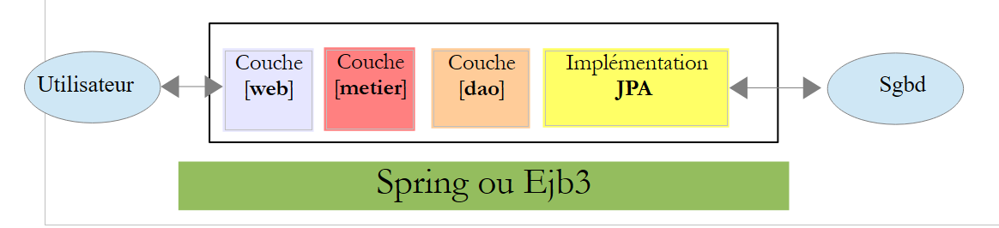
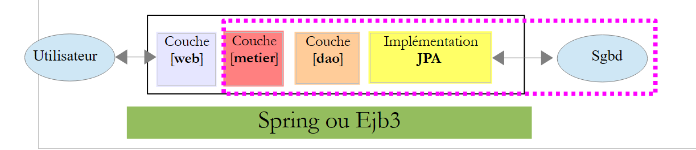
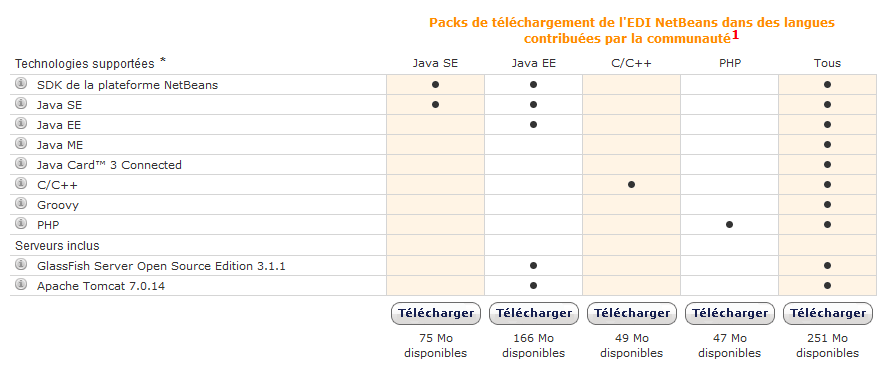

1. Introduction
The PDF of the document is available |HERE|.
Examples from the document are available |HERE|.
Here, we aim to introduce the key concepts of Struts 2 using examples. Struts 2 is a web framework that provides:
- a number of libraries in the form of JAR files
- a development framework: Struts 2 influences how a web application is developed.
The prerequisites for understanding the examples are as follows:
- basic knowledge of the Java language
- basic knowledge of web development, particularly HTML.
All the resources needed to meet these prerequisites can be found on the website [http://developpez.com]. I have written a few of them, which can be found on the website [http://tahe.developpez.com].
The examples in this document are available at the URL [http://tahe.developpez.com/java/struts2].
To learn more about Struts 2, you can use the following references:
- [ref1]: the Struts 2 documentation, available on the Struts website
- [ref2]: the book "Struts 2 in Action" by Donald Brown, Chad Michael Davis, and Scott Stanlick, published by Manning. This book is particularly instructive.
We will occasionally refer to [ref2] to let the reader know they can explore a topic in greater depth using this book.
This document has been written so that it can be read without a computer at hand. Therefore, we include many screenshots.
1.1. The Role of Struts 2 in a Web Application
First, let’s situate Struts 2 within the development of a web application. Most often, it will be built on a multi-tier architecture such as the following:
 |
- The [web] layer is the layer in contact with the web application user. The user interacts with the web application through web pages displayed by a browser. It is in this layer that Struts 2 resides, and only in this layer.
- The [business] layer implements the application’s business logic, such as calculating a salary or an invoice. This layer uses data from the user via the [web] layer and from the DBMS via the [DAO] layer.
- The [DAO] (Data Access Objects) layer, the [JPA] (Java Persistence API) layer, and the JDBC driver manage access to the DBMS data. The [JPA] layer serves as an ORM (Object-Relational Mapper). It acts as a bridge between the objects handled by the [DAO] layer and the rows and columns of data in a relational database.
- The integration of the layers can be achieved using a Spring container or EJB3 (Enterprise JavaBeans).
Most of the examples provided below will use only a single layer, the [web] layer:
 |
However, this document will conclude with the construction of a multi-layer web application:
 |
The [business], [DAO], and [JPA/Hibernate] layers will be provided to us as a JAR archive so that, once again, we only need to build the [web] layer.
1.2. The Struts 2 MVC Development Model
Struts 2 implements the MVC (Model–View–Controller) architectural pattern as follows:
 |
The processing of a client request proceeds as follows:
The requested URLs are in the form http://machine:port/contexte/rep1/rep2/.../Action. The path [/rep1/rep2/.../Action] must correspond to an action defined in a Struts 2 configuration file; otherwise, it is rejected. An action is defined in an XML file in the following format:
In the previous example, let’s assume that the URL [http://machine:port/contexte/actions/Action1] is requested. The following steps are then executed:
- request - the browser client makes a request to the controller [FilterDispatcher]. The controller handles all client requests. It is the entry point of the application. It is the C in MVC.
- processing
- The C controller consults its configuration file and discovers that the action actions/Action1 exists. The namespace (line 1) concatenated with the action name (name attribute on line 2) defines the action actions/Action1.
- The C controller instantiates [2a] a class of type [actions.Action1] (class attribute on line 2). The name and package of this class can be anything.
- If the requested URL includes parameters of the form [param1=val1¶m2=val2&...], then controller C assigns these parameters to the [actions.Action1] class as follows:
Therefore, the [actions.Action1] class must have setParami methods for each of the expected parami parameters.
- Controller C calls the method with the signature [String execute()] of the [actions.Action1] class to execute. This method can then utilize the parami parameters that the class has retrieved. When processing the user’s request, it may need the [business] layer [2b]. Once the client’s request has been processed, it can generate various responses. A classic example is:
- an error page if the request could not be processed correctly
- a confirmation page otherwise
The execute method returns a string-type result to the C controller, known as a navigation key. In the example above, [*actions.Action1*].*execute can produce two navigation keys: "page1" (line 3) and "page2" (line 4). The [actions.Action1].execute method will also update the M* model [2c] that will be used by the JSP page sent in response to the user. This model may contain elements of:
- the instantiated [actions.Action1] class
- the user's session
- Application scope data
- ...
- response - the C controller instructs the JSP page corresponding to the navigation key to display [3]. This is the view, the V in MVC. The JSP page uses an M model to initialize the dynamic parts of the response it must send to the client.
Now, let’s clarify the relationship between MVC web architecture and layered architecture. In fact, these are two different concepts that are sometimes confused. Let’s take a single-layer Struts 2 web application:
 |
If we implement the [web] layer with Struts 2, we will indeed have an MVC web architecture but not a multi-layer architecture. Here, the [web] layer will handle everything: presentation, business logic, and data access. With Struts 2, it is the [Action] classes that will perform this work.
Now, let’s consider a multi-layer web architecture:
 |
The [web] layer can be implemented without a framework and without following the MVC model. We then have a multi-layer architecture, but the web layer does not implement the MVC model.
In MVC, we said that the M model is that of the V view, i.e., the set of data displayed by the V view. Sometimes (often), another definition of the M model in MVC is given:
 |
Many authors consider that what is to the right of the [web] layer forms the M model of MVC. To avoid ambiguity, we can refer to:
- the domain model when referring to everything to the right of the [presentation] layer
- the view model when referring to the data displayed by a view V
Hereinafter, the term "M model" will refer exclusively to the model of a view V.
1.3. The tools used
Moving forward, we are using (December 2011)
- the NetBeans 7.01 IDE available at [http://www.netbeans.org]
- the Struts 2 plugin for NetBeans 7.01, available at [http://plugins.netbeans.org/plugin/39218]
- Struts 2 version 2.2.3, available at [http://struts.apache.org/]
Note that only the Struts 2 libraries available at [http://struts.apache.org/] are required to develop the examples that follow. NetBeans can be replaced by another IDE (Eclipse, JDeveloper, IntelliJ, etc.), and the Struts 2 plugin is only there to make the developer’s life easier. It is not essential either.
1.3.1. NetBeans IDE
On the NetBeans download site, we select the Java EE version:

1.3.2. Struts 2 Plugin
Depending on the NetBeans version, this plugin has not always been available. As of December 2011, it can be found at the URL [http://plugins.netbeans.org]. This URL lists the various plugins available for NetBeans. You can filter your search. In [1], we search for plugins that contain the word "struts" in their name.
 |
- Follow the link [2]
 |
Download the plugin and unzip it [2]. To integrate it into NetBeans, proceed as follows:
- Launch NetBeans
 |
- In [1], select the Tools/Plugins menu
- In the [2] tab, click the [3] button
- In [4], select the .nbm files for the downloaded plugins. Here, we choose the Struts 2.2.3 libraries rather than those for Struts 2.0.14
- Back in the [2] tab, install the selected plugins using the [5] button.
Installing plugins often requires restarting NetBeans.
1.3.3. The Struts 2 Libraries
If you have downloaded the Struts 2 plugin for NetBeans, you have the main Struts libraries but not all of them. Later on, we will need certain libraries available on the Struts 2 website [http://struts.apache.org/].
 |
Follow link [1] and then link [2] to download the zip file for version 2.2.3.1. Once the distribution is unzipped, the libraries required by Struts can be found in the [lib] folder [3] of the distribution. There are dozens of them, so the question arises as to which ones are essential. This is where the Struts plugin will help us.